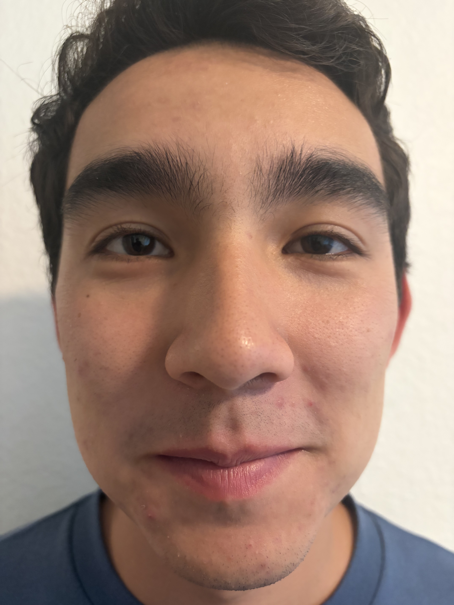
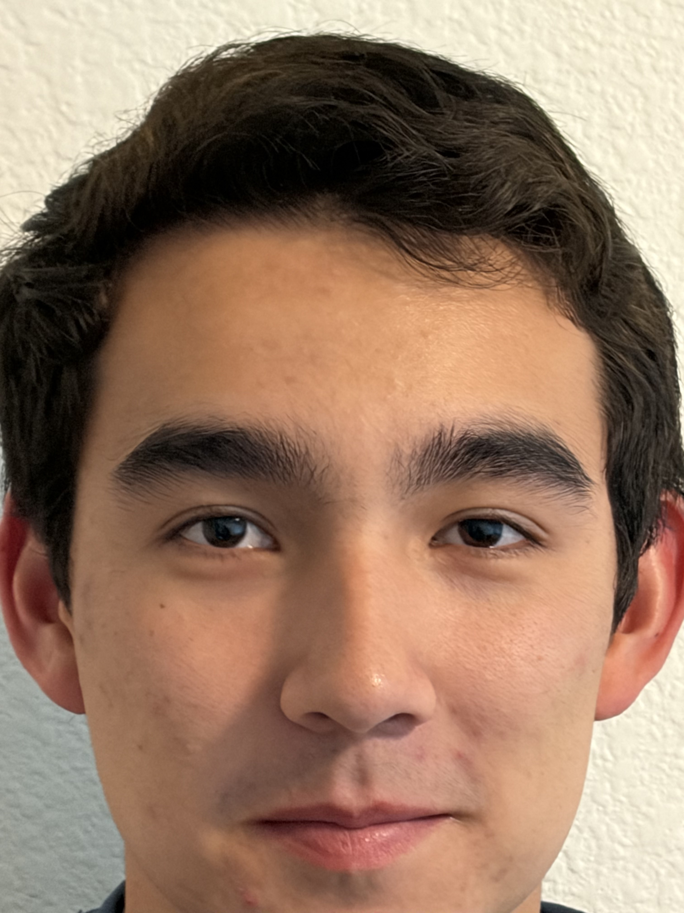
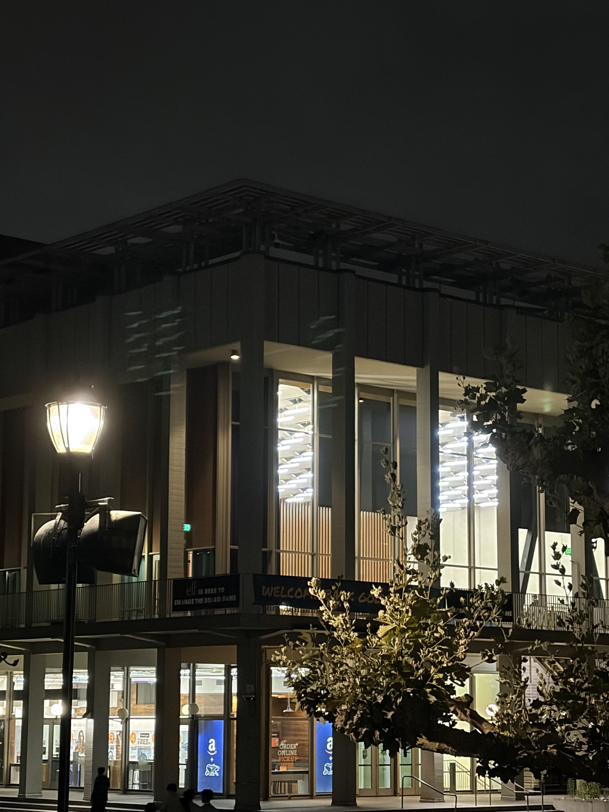
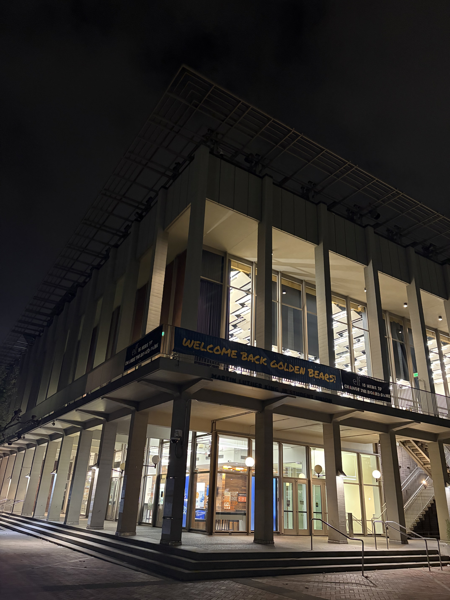
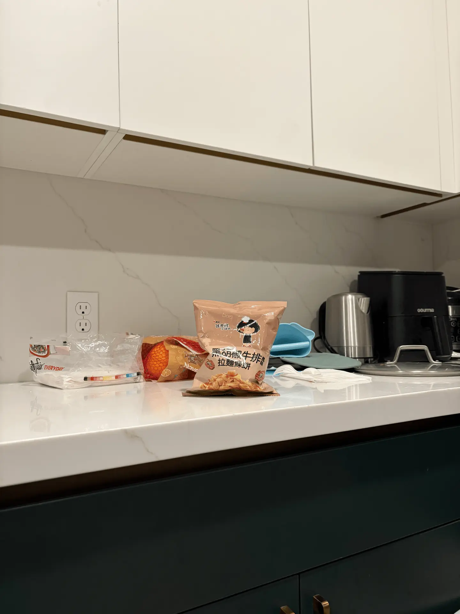

CS 180 · Project 0
Becoming Friends with Your Camera
A short study of how camera distance and focal length change the way a scene looks.
Part 1: Selfie — wrong way vs. right way
The close-up selfie exaggerates the central features of the face. After stepping back and zooming in to keep the face about the same size, the portrait has a more natural perspective.


Part 2: Architectural perspective compression
For the zoomed-in image, the building appears flatter and more compressed. Moving closer and using a wider view makes the foreground feel larger and exaggerates the building's converging lines.


Part 3: Dolly zoom
